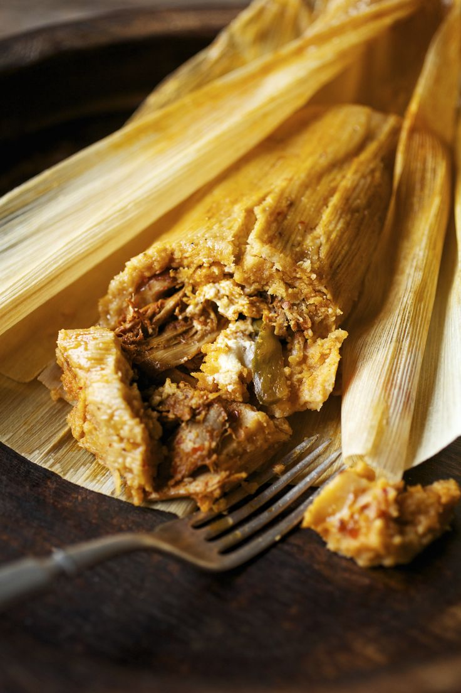

The tamal is another ancient maize-based preparation found throughout Mexico and other parts of Latin America. Its name derives from the Nahuatl word tamalli, commonly understood as referring to something wrapped.
Tamales existed in Mesoamerica before the arrival of Europeans and became important because they transformed maize dough into a portable, adaptable food that could be prepared with many different fillings and transported relatively easily.
Over centuries, different Indigenous communities and regions developed distinctive varieties using locally available ingredients and leaves. The result is not a single standardized Mexican tamal but an enormous family of preparations.
Mexican agricultural authorities estimate that the country contains hundreds of recognized tamal recipes and potentially thousands of local and family variations.
Because tamales vary considerably by region, there is no universal ingredient list. Nevertheless, many Mexican tamales contain:
Possible fillings include:
Depending on the region:
Mexican government sources note that tamales may be wrapped in corn, banana, reed, chilaca, papatla, and other leaves depending on local tradition.
Although regional techniques differ, the general preparation method follows several common stages
Nixtamalized maize dough is mixed with fat, commonly lard in many traditional recipes, together with broth or water and salt. The mixture is beaten or kneaded until it develops a soft consistency suitable for steaming.
Dried corn husks are usually soaked in warm water to make them flexible. Banana leaves are commonly heated briefly over a flame or softened with hot water so that they can be folded without tearing.
A portion of prepared dough is spread over the wrapper.
Meat, sauce, beans, vegetables, mole, cheese, or another filling is placed in the center.
The leaf or husk is folded around the masa, creating an individual package.
The tamales are arranged inside a steamer and cooked until the maize dough becomes firm and separates relatively easily from its wrapper. Depending on their size and type, cooking often requires approximately an hour or more.
Today, tamales continue to play an important role in Mexican traditions. They are commonly prepared for Día de la Candelaria, Christmas celebrations, Day of the Dead, family gatherings, religious festivals, and other special occasions. Their preparation is often a collective activity in which several members of a family participate, helping preserve recipes, techniques, and regional customs across generations.
Their cultural importance therefore extends beyond nutrition. Tamales represent the continuity of Indigenous culinary knowledge, the central role of maize in Mexican society, and the way food can preserve community traditions over centuries.